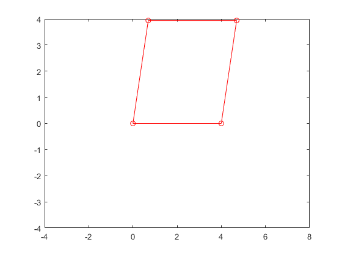
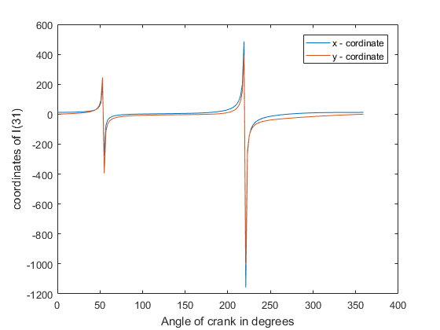

Contents
KDOM Assignment cum Project
Variable initializations
m=4; % m is mechanism's number of links lengths = zeros(m,1); % contains the link lengths in order theta = zeros(m,1); % contains the angles lengths in order t = .01 ; % animation speed e = 10^-5; %Control value parameter d = 0 ; % dummy variable
test values
Tested
lengths = [ 4;4;4;4]; theta = [0;80*pi/180;10*pi/180;80*pi/180]; fprintf('The values of theta should be \n'); [0;3.316125578789226;-1.053289421689998e-12;3.316125578790280]; fprintf('****************Running program ************** \n'); fprintf('The values of theta are \n'); theta = NewtonRaphson( lengths ,theta ); theta;
The values of theta should be ****************Running program ************** The values of theta are iteration number 4
Plotting
d = Plot( lengths,theta);
Main program
Variables to be assigned before starting 1)lengths
lengths = [(12^2+1.5^2)^.5;6;10;3]; %-Test lengths lengths = [28;5;19;15]; %-Test Lengths
lengths = [(12^2+1.5^2)^.5;3;10;6]; %-Test Lengths % lengths = [6;3;10;12]; %Grash off mechanism % lengths = [26;18;18;8]; A = [0,0,0,0]; %Data of theta f=0; %Flag for number of branches [ B,C,f,A,D ] = Datacompiler( lengths,t );% refer API for output variables % d = Animation( lengths,B,C,f,1,.001 ); % % xlswrite('Data',B,'section 1'); % W=xlsread('Data','section 2') w = [4;-2;1;2]*2*pi; % link angular velocities in radians per secon [W] = [B(:,2), Velacc( lengths,B,w )]; [K,a] = Velacc( lengths,B,w ); % W = [theta(:,2),W]; plot(W(:,1),W(:,3)) xlabel('Angle of crank in degrees'); ylabel('Angular velocity of rocker in rad/s'); % pause; plot(W(:,1),a(:,2)) xlabel('Angle of crank in degrees'); ylabel('Angular acceleration of rocker in rad/s^2'); % pause; % xlswrite('Data',B,'angles'); % xlswrite('Data',W,'angularvelocities'); % xlswrite('Data',[W(:,1),a],'angularacc'); global x y ; D =D *pi/180; aa = -cos(D(:,4)) + (sin(D(:,4))./tan(D(:,2))); L4 = (12^2 +1.5^2)^.5 ./(aa); x = (12^2+1.5^2)^.5 + L4.*cos(D(:,4)); y =L4.*sin(D(:,4)); % D =D *pi/180; % aa = cos(D(:,2)) - (sin(D(:,2))./tan(D(:,4))); % L4 = (12^2 +1.5^2)^.5 ./(aa); % % x = L4.*cos(D(:,2)); % y = L4.*sin(D(:,2)); % d = Animation( lengths,B,C,f,1,.001 ,x,y); plot(B(:,2),x); hold on; plot(B(:,2),y); xlabel('Angle of crank in degrees'); ylabel('coordinates of I(31)'); legend('x - cordinate','y - cordinate');
iteration number 8 iteration number 3 iteration number 3 iteration number 3 iteration number 3 iteration number 3 iteration number 3 iteration number 3 iteration number 3 iteration number 3 iteration number 3 iteration number 3 iteration number 3 iteration number 3 iteration number 3 iteration number 3 iteration number 3 iteration number 3 iteration number 3 iteration number 3 iteration number 3 iteration number 3 iteration number 3 iteration number 3 iteration number 3 iteration number 3 iteration number 3 iteration number 3 iteration number 3 iteration number 3 iteration number 3 iteration number 3 iteration number 3 iteration number 3 iteration number 3 iteration number 3 iteration number 3 iteration number 3 iteration number 3 iteration number 3 iteration number 3 iteration number 3 iteration number 3 iteration number 3 iteration number 3 iteration number 3 iteration number 3 iteration number 3 iteration number 3 iteration number 3 iteration number 3 iteration number 3 iteration number 3 iteration number 3 iteration number 3 iteration number 3 iteration number 3 iteration number 3 iteration number 3 iteration number 3 iteration number 3 iteration number 3 iteration number 3 iteration number 3 iteration number 3 iteration number 3 iteration number 3 iteration number 3 iteration number 3 iteration number 3 iteration number 3 iteration number 3 iteration number 3 iteration number 3 iteration number 3 iteration number 3 iteration number 3 iteration number 3 iteration number 3 iteration number 3 iteration number 3 iteration number 3 iteration number 3 iteration number 3 iteration number 3 iteration number 3 iteration number 3 iteration number 3 iteration number 3 iteration number 3 iteration number 3 iteration number 3 iteration number 3 iteration number 3 iteration number 3 iteration number 3 iteration number 3 iteration number 3 iteration number 3 iteration number 3 iteration number 3 iteration number 3 iteration number 3 iteration number 3 iteration number 3 iteration number 3 iteration number 3 iteration number 3 iteration number 3 iteration number 3 iteration number 3 iteration number 3 iteration number 3 iteration number 3 iteration number 3 iteration number 3 iteration number 3 iteration number 3 iteration number 3 iteration number 3 iteration number 3 iteration number 3 iteration number 3 iteration number 3 iteration number 3 iteration number 3 iteration number 3 iteration number 3 iteration number 3 iteration number 3 iteration number 3 iteration number 3 iteration number 3 iteration number 3 iteration number 3 iteration number 3 iteration number 3 iteration number 3 iteration number 3 iteration number 3 iteration number 3 iteration number 3 iteration number 3 iteration number 3 iteration number 3 iteration number 3 iteration number 3 iteration number 3 iteration number 3 iteration number 3 iteration number 3 iteration number 3 iteration number 3 iteration number 3 iteration number 3 iteration number 3 iteration number 3 iteration number 3 iteration number 3 iteration number 3 iteration number 3 iteration number 3 iteration number 3 iteration number 3 iteration number 3 iteration number 3 iteration number 3 iteration number 3 iteration number 3 iteration number 3 iteration number 3 iteration number 3 iteration number 3 iteration number 3 iteration number 3 iteration number 3 iteration number 3 iteration number 3 iteration number 3 iteration number 3 I am in data compiler